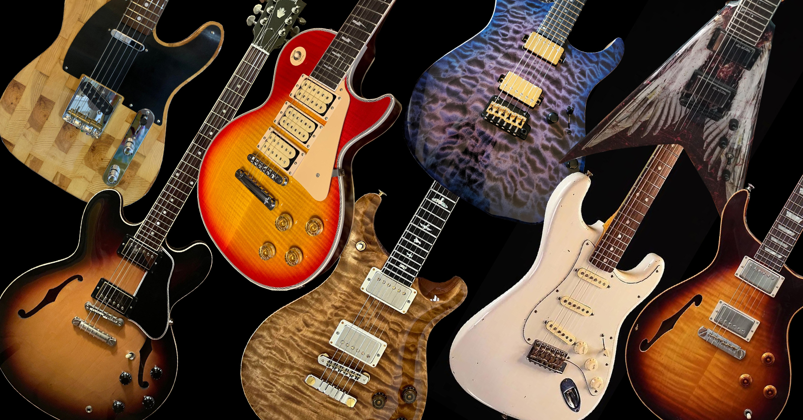
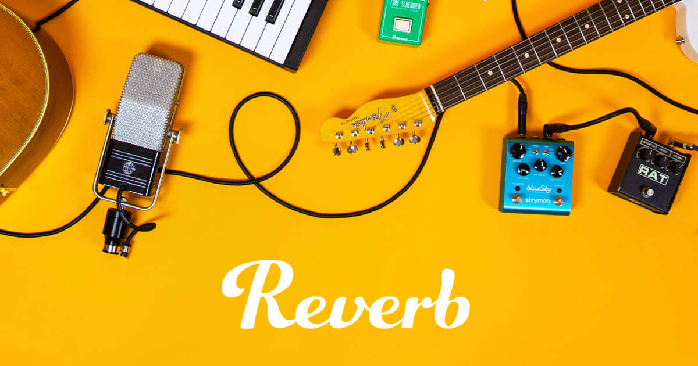
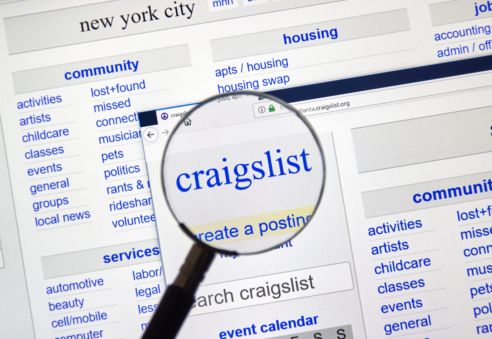
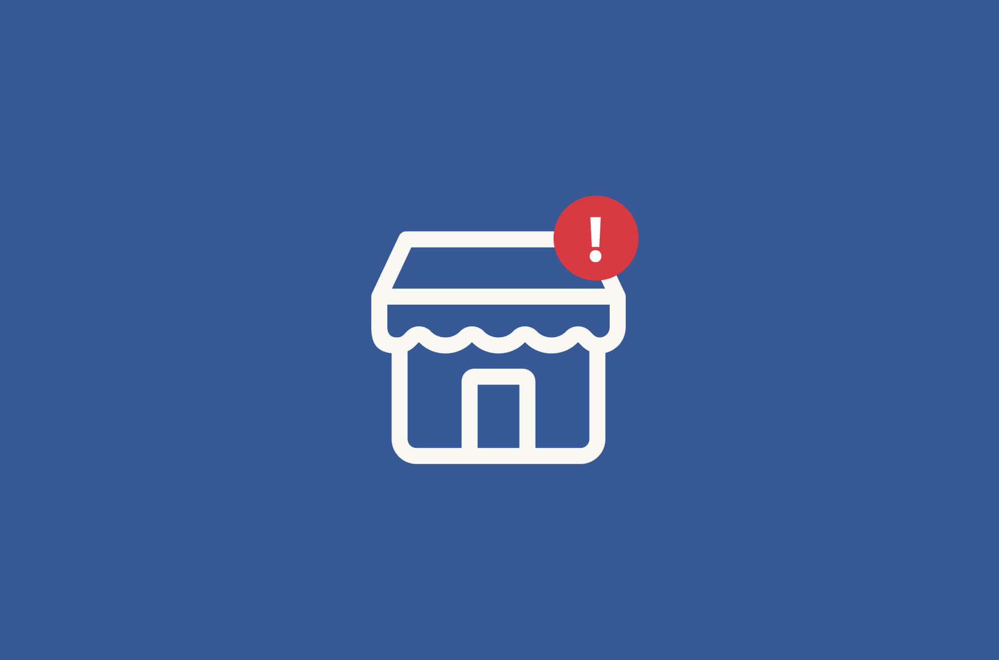

#1 - Sweetwater Gear Exchange

Looking for affordable yet high-quality used instruments? Look no further than Sweetwater Guitar Exchange. They offer a remarkable selection of used instruments that won't break the bank. With a solid reputation in the music retail industry, Sweetwater is a trusted and reliable retailer committed to customer satisfaction.
Sweetwater Guitar Exchange ensures the authenticity and quality of their used instruments through rigorous quality control. Skilled technicians conduct thorough inspections, checking for defects and ensuring excellent playing condition. You can trust that the instrument you purchase will be reliable and high-performing.
Sweetwater takes pride in offering a diverse inventory of used instruments. Whether you're a budget-conscious beginner or a seasoned professional seeking a unique gem, they have options for you. Their knowledgeable sales representatives provide excellent customer service, guiding you through the buying process and offering expert advice.
In conclusion, Sweetwater Guitar Exchange is the go-to destination for musicians in search of affordable and reliable used instruments. With their solid reputation, rigorous quality control, diverse inventory, and exceptional customer service, you can find the perfect instrument to enhance your musical journey.
#2 - Reverb.com

Discover a reliable online marketplace for affordable, high-quality used instruments at Reverb.com. With a strong reputation and commitment to customer satisfaction, Reverb.com offers a secure platform to buy and sell instruments.
Their extensive selection and worldwide network of sellers provide a diverse range of options for musicians of all levels. Enjoy peace of mind with Reverb.com's meticulous seller vetting process, ensuring the authenticity and accuracy of instrument listings.
Detailed descriptions, high-quality photos, and customer reviews empower you to make informed decisions. Benefit from transparent pricing and reliable shipping services for a seamless buying experience.
Find your perfect instrument on Reverb.com and unlock your musical potential.
#3 - OfferUp
Looking for a convenient online marketplace to find used instruments? Look no further than OfferUp. This user-friendly platform connects buyers and sellers locally, offering a wide range of musical instruments.
Benefit from the large user base, increasing the chances of finding unique instruments and competitive prices. However, exercise caution as OfferUp lacks the rigorous seller vetting process of specialized music gear platforms.
Take time to evaluate listings and communicate directly with sellers to ensure authenticity and condition. While the platform may not offer dedicated music-related features, it still provides valuable opportunities to find affordable instruments.
Engage in open communication, inspect items thoroughly, and seize great deals on OfferUp.
#4 - Craigslist

Searching for affordable used instruments? Look no further than Craigslist. This popular online classifieds platform connects local buyers and sellers, offering a wide range of musical instruments.
Craigslist's extensive reach and localized platforms allow you to find instruments available in your area, facilitating convenient in-person inspections and transactions.
While Craigslist offers a diverse selection, it's essential to exercise caution due to the lack of seller vetting and security measures found on dedicated music gear platforms. Take extra care when evaluating listings and verifying instrument authenticity to ensure a safe and reliable transaction.
Communicating directly with sellers on Craigslist may involve negotiating prices and arranging meet-ups, requiring careful communication and personal discretion to avoid potential scams or unreliable sellers.
Despite these considerations, Craigslist remains a valuable resource for finding affordable used instruments. By taking necessary precautions, conducting thorough inspections, and meeting in safe public locations, you can uncover hidden gems and strike great deals on Craigslist.
In conclusion, Craigslist offers a diverse selection of local listings for used instruments. While lacking the vetting and security measures of specialized platforms, it provides opportunities to find affordable instruments with careful evaluation and safe transactions.
#5 - Facebook Marketplace

Looking for a convenient online marketplace to find used instruments? Explore Facebook Marketplace, a popular platform that connects buyers and sellers within local communities.
Facebook Marketplace offers a user-friendly interface integrated with your Facebook account, making it easy to browse and discover a wide range of musical instruments in your area.
One of the key advantages of Facebook Marketplace is its large user base. With millions of active users, you have access to a diverse selection of instruments, including both common and unique finds.
When using Facebook Marketplace, it's important to exercise caution and practice due diligence. The platform does not have a strict vetting process for sellers, so it's essential to communicate directly, ask questions, and inspect instruments before making a purchase.
While Facebook Marketplace lacks specialized features for music gear, it offers a social aspect that can foster connections with local sellers. This can be particularly advantageous for negotiating prices, arranging meet-ups, and potentially building ongoing relationships.
Overall, Facebook Marketplace provides a convenient platform to find used instruments within your local community. By combining the large user base with cautious evaluation and direct communication, you can discover affordable instruments and potentially connect with fellow musicians.